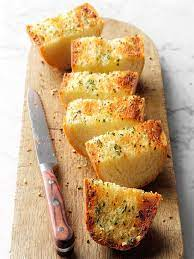

Garlic Bread

How To Make Garlic Bread
Ingredients
- 1 loaf of Italian or French bread
- 1/2 cup of unsalted butter
- 1 tablespoon chopped fresh parsely
- 1/4 cup freshly grated Parmesan cheese
Steps
- Preheat OVen to 350F
- Cut the loaf in half, horizontally
- Mix the butter, garlic, and parsely together in a small bowl
- Spread butter mixture over the two bread halves
- Heat in oven on bake for 10 minutes
- Sprinkle with Parmesan cheese
- Slice and serve